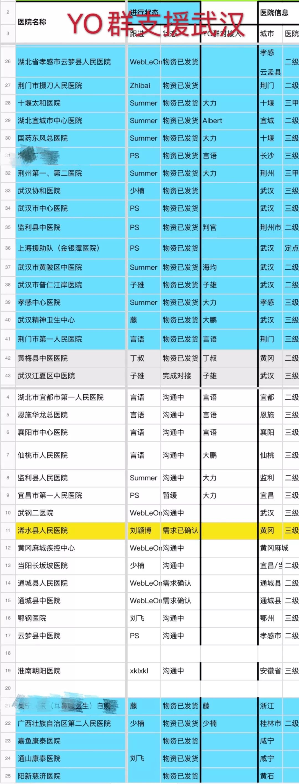

口罩为什么会短缺？
原文链接 备份链接 《人物》记者向多位寻求捐赠的医护人员咨询，他们均表示，很多医院的医用外科口罩库存量大概在一个星期左右，「平常有时口罩也戴一天，如果不去视察病房，有的科室没有戴口罩的需求。」用得不多、存量少，脆弱的库存和供应系统很快被疫 …

对于许多人来说，过去这个除夕可能是有生之年最没有「年味」的一个大年三十。
「Yo！海均的朋友圈」的群（以下简称 Yo 群）里也是一样。
有人抱怨、有人不平，有人行动了起来。
Yo 群的初始成员是一批资深的互联网产品经理，他们来自字节跳动、腾讯、微信、拼多多、美团点评、快手、百度等知名公司。除了产品经理，还有电商领域的连续创业者、投资人等，许多名字即使在互联网圈之外也广为人知。
基于整个群多年的信任关系，他们首先凑了一笔钱，捐了现金给武汉大学教育发展基金会。第一批一共 86700 元打入了基金会的收款账户。
捐钱其实非常简单，但是防疫前线最缺乏的并不是钱，而是物资。物资不仅涉及到采购，还需要募集/管理资金、联络物流、盯好交接，乃至最后一公里的配送，也比平时的难度大上太多。
春节期间工厂停工、大部分快递停运，加上道路封闭，平日里能等几天，现在耽搁半天都会在耽误生命。
他们都是在互联网工作十几年的产品经理、设计师、程序员等，正经工作是各个公司的 CEO、副总裁和业务负责人。
除夕夜 23:40，曹大鹏（前 nice 联合创始人）和黄海均（职人社创始人）等人，一起拉了一个群，起名叫「支援湖北」，目前已经 77 名互联网产品经理动了起来。
只要能捐出去就是胜利，谁捐都一样
现在他们自己动手、做采购，对接医院做客服、搞物流，连财务都是由一家公司的 CTO 兼任，一群 P8、P9 以上的产品经理们都在一起打杂。
这群平时给别人提需求的产品经理，快速梳理了其中的核心需求：
1、很多容易被忽略的医院缺乏物资
2、因为时间原因，统一调配的物资未必能立刻分发到中小型医院或是县级医院
3、要帮他们在这几天内对接上应急物资，避免医护人员被感染。
群里陆续又凑了十几万现金，用来购买物资。剩下的人则分工合作，有人专门去淘宝、1688 等渠道找物资，因为群里有不少做出海创业/投资的，东南亚、印度的货源也有人专门去联系。
群里的罗子雄，是业内有名的设计师，之前是锤子科技的设计总监。他对口罩的型号、标准十分了解，大家拿不准的就来找他判断。随着网络传播扩散，他们能对接上的物资多了，子雄整理了一份《物资标准文档》，供大家参考。
很多次负责采购的兄弟都被供应商放了鸽子，原本答应签合同的货源，到最后一步反悔了。其中很多货源是被和他们有同样目的的人们抢走的。
「只要能捐出去就是胜利，谁捐都一样。」他们说。
有人专门联系医院、医生，整理出医院的情况，同步到云端表格里。
许多需求看起来不大，比如 100 只护目镜、100 套防护服这样的需求，按「应急」的需求，群里有人专门负责对接，将每一个需求当成做产品时的一个项目来推进，谁对接、谁负责。
因为时间特别紧急，快一步可能就意味着少几个医护人员冒风险。

△ 武汉市江夏区中医院收到了他们捐助的第一批 500 个护目镜
一句话来说，这群互联网产品经理，拿出了做产品的思路，来解决统筹物资没有完全分配到位之前的时间差问题。
网上各种各样的信息满天飞，骗子和谣言都不少，有人冒充、冒领，有人以次充好，来路不明的物资难以验证。这样的问题，各个民间援助组织或多或少都有遇到。
这群产品经理的办法还是像平时推进项目一样，只对接有志愿者深度对接、摸了底的医院，对于别的志愿者组织能够验证的需求方，他们就将物资方推荐过去，尽可能保证每一笔物资的流动是有效率且可信的。
云端表格除了具体的联系信息，也有专人汇总、更新每个项目的状态，如「沟通中」「已发货」「暂缓」，「已确认」的需求高亮显示，提醒大家推进，「完成对接」的则标成灰色，就如同一个项目已经 close.
目前他们已经累计对接了 43 家医院，数量还在持续增加。

我们地方虽然小，但也不想被忽视
Yo 群已经对接的医院列表上，有武汉协和医院、武汉中心医院这样的大型定点医院，更多的还是孝感市云梦县中心医院、荆门市掇刀中心医院等一开始没有出现在援助视野里的医院。
许多容易被忽略的医院，一样面临着困难。
Yo 群的志愿者之一、知群 CEO 马力收到了这样一条求助信息：
「您可以捐助我们医院吗？我们是武汉市精神卫生中心，收治的是精神病患者，但是之前收治了潜伏期的患者导致了十几个患者感染，以及近 10 位医护人员感受。因为我们的患者是特殊群体，很难转到定点医院，但是我们又没有防护用品，导致现在医护人员都暴露在感染的风险下。我们医院不是定点医院，也没有发热门诊，所以在防护措施购买和捐助上都得不到重视，但我们确实急需防护措施！」
在后续的沟通中，这位医生说，现在武汉精神卫生中心有两个病房都出现了感染案例，其中一个病房从科主任、护士长、医生都中招了，有位八十多岁的返聘老专家症状很重。
目前感染的患者是隔离的，但是门诊接到的重性的精神疾病患者必须要住院治疗，不得不收治，位了预防潜伏期感染，现在医院还需要腾出病房来隔离新入院患者。
没有防护服、护目镜，更没有医用帽子、N95 口罩。许多医生都在私下通过各种关系联系供应商。
「如果是捐赠，我们只好意思要 5000 个 N95 口罩，如果是购买，口罩我们要更多。」这位医生说。
经过沟通，Yo 群和其他的志愿者组织一起找到了少量资源帮他们应急。如果能有更多的资源，我们都希望能够更好地帮助像他们这样的医生。
△ Yo 群收到的来自一线医护人员求助
需求来自四面八方，更多的产品经理动了起来。一位曾在美团工作过的产品经理，看到 Yo 群的信息之后联系到黄海均，他的亲妹妹在武汉一家医院当医生，但是没有口罩、防护服等基本设备。哥哥在北京非常焦急，这位妹妹所在医院的需求，也加入了 Yo 群的需求列表。
最初他们只是一群彼此熟悉的朋友凑了一些钱来做这件事，加起来有几十万的现金，在三天的时间里，这个群已经梳理完流程，从除夕的一个电话会议开始，募款捐献的群，变成一个物资对接的客服中台。
我把他们梳理的资源/物资联系方式放在「阅读原文」里，如果你有资源，但是缺乏可靠的中间环节，搞定专业环节、递送到需要的医院手中，或者有相应的求助信息（需要是医院里的工作人员，避免冒充、冒领等风险），都可以填写这个表单。
另外，古典发布了一篇《联系 73 家医院发了 38 万货以后，总结出给捐助者的 8 条攻略》相当全面，也给想要出一份力的你参考。
阅读原文，请大力戳
↓↓↓
长按二维码向我转账
受苹果公司新规定影响，微信 iOS 版的赞赏功能被关闭，可通过二维码转账支持公众号。
原文链接 备份链接 《人物》记者向多位寻求捐赠的医护人员咨询，他们均表示，很多医院的医用外科口罩库存量大概在一个星期左右，「平常有时口罩也戴一天，如果不去视察病房，有的科室没有戴口罩的需求。」用得不多、存量少，脆弱的库存和供应系统很快被疫 …
原文链接 备份链接 武汉封城、公共交通全部关停以后，陈述杰和几个朋友一起召集起一支4000多人的爱心车队，为武汉市的医务工作者们提供后援支持。直到1月25号，团队里已知至少三人出现发热，公益接送医生行动暂时停止，他们仍然在帮忙运输医疗物 …
原文链接 备份链接 医疗防护资源不足是常态，各地资源调配需平衡，“灯下黑”区域渐次光亮，但少数地区的疫情宣传依旧不到位 外地务工返乡者最担忧的问题是年后经济收入断流、地域歧视，担心节后可能无法返工 本文首发于南方人物周刊 文 | 本刊记 …
原文链接 备份链接 武汉第一批七家定点医院医用物资也存在短缺 防疫物资今日抵达汉口，明日有望缓解 本文首发于南方人物周刊 文 | 本刊记者 徐梅 赵蕾 张宇欣 编辑 | 周建平 蒯乐昊 全文约3479字，细读大约需要9分钟 有的市属一 …
原文链接 备份链接 按规定，他们每接一次病人，都要全车消毒、销毁防护服，不然可能会成为新的传染源。但现实情况是，他们全站连一套防护服都没了。除夕夜里两点，他没有睡觉，发了这半年里唯一一条不是关于女儿的朋友圈，是一条物资的求助。他告诉《人 …